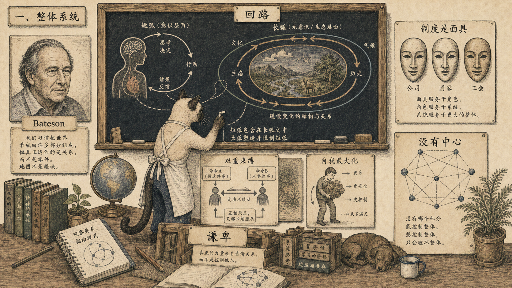

Module 01
Bateson：控制论不是控制欲
系统的智慧不属于某个中心，局部控制整体的幻想本身就有病。
先看图：Bateson 的关键词不是“机器”，而是回路、语境和元层级。意识常常只看见目的指向的短弧，生命却依靠许多相互扣连的长回路。
有趣的是：他批评现代社会里的“自我最大化实体”：公司、政党、工会、国家。法律上它们像人，生物事实中却只是人的片段集合，会把局部目的放大成整体命令。
为什么重要：Whole Earth 借 Bateson 得到的不是控制技术，而是一种谦卑：在显示出心智特征的系统里，任何部分都不能单方面控制整体。